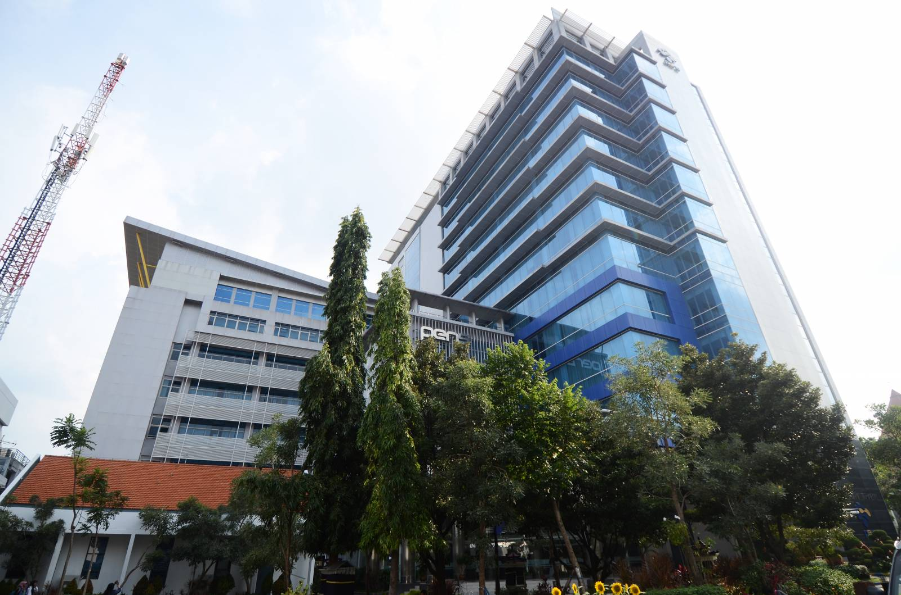

Tentang PENS

Awal sejarah PENS dimulai pada tahun 1985. Saat itu, tim studi awal Japan International Cooperation Agency (JICA) untuk bantuan dan kerjasama teknik yang dikepalai oleh Prof. Y. Naito dari Tokyo Institute of Technology, datang ke politeknik ini. Setelah melakukan pengamatan dan studi kelayakan di tahun 1986, JICA menyetujui untuk memulai kerjasama teknik di tahun 1987 dengan mengirim 5 orang pengajar Indonesia ke perguruan tinggi teknologi di Jepang.
Politeknik Elektronika & Telekomunikasi (PET) 1988 – 1992
Pada tanggal 15 Maret 1988, Pemerintah Jepang, melalui JICA secara resmi memberikan gedung kampus kepada pemerintah Indonesia lengkap dengan berbagai peralatan pendidikan. Selanjutnya pada tanggal 2 Juni 1988 Politeknik ini diresmikan dengan nama “Politeknik Elektronika & Telekomunikasi (PET)” dan sejak saat itulah tahun ajaran dimulai. Kerjasama dengan JICA pun berlanjut dengan banyaknya pengajar politeknik yang dikirim ke berbagai perguruan tinggi teknologi di Jepang dan sebaliknya, pengiriman beberapa ahli dari Jepang ke politeknik ini.
Politeknik Elektronik Surabaya (PES) 1992 – 1996
Pada bulan Juni 1991, Menteri Pendidikan dan Kebudayaan menata ulang keberadaan seluruh Politeknik, Institut dan sebagian Universitas di Indonesia. Pada saat itu politeknik ini pun berubah nama menjadi “Politeknik Elektronika Surabaya (PES)” yang merupakan bagian dari Institut Teknologi Sepuluh Nopember Surabaya (ITS).
Politeknik Elektronika Negeri Surabaya (PENS) 1996 hingga sekarang
Pada tahun 1996, nama politeknik ini kembali diubah oleh Menteri Pendidikan dan Kebudayaan menjadi “Politeknik Elektronika Negeri Surabaya (PENS)”. Nama itulah yang kemudian tetap bertahan hingga kini.